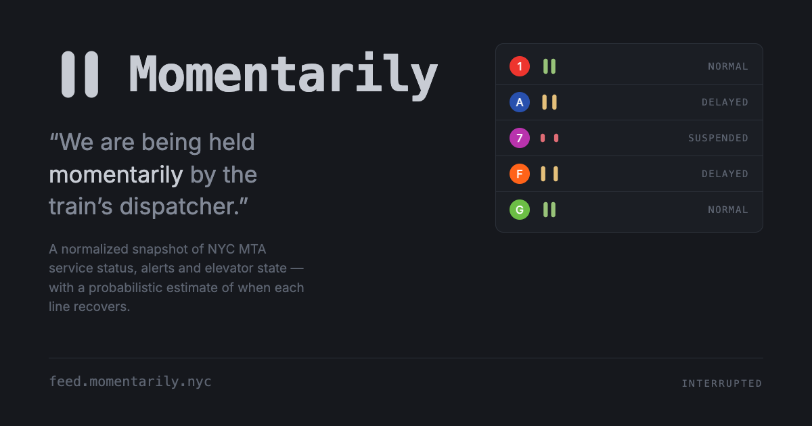

128
32
24
16
mark-mono.svg — fixed bone, via <img>
Acceptance check for docs/brand/assets/. Rasters are at true pixel size where the question is legibility. Do not zoom this page.
Two rounded rects, so there is nothing to lose: no hinting, no optical correction. Light ground uses mark-ink.svg, not an inverted bone asset.
The second cell is the expected failure and the reason both fixed variants exist: pick by background, not by taste. mark-mono is bone for dark, mark-ink is ground for light, mark.svg is currentColor for inline.

| state | gap | gap : bar | height | rect x positions |
|---|---|---|---|---|
| normal / logo | 4 | 0.80 : 1 | 18 | 5, 14 |
| delayed (~10 min) | 7.96 | 1.59 : 1 | 18 | 3.02, 15.98 |
| suspended | 11 | 2.20 : 1 | 10 | 1.5, 17.5 |
Bar width fixed at 5, rx 2.5 (stadium), 24 grid, pair centred. Pause proportions run about 0.4–1.0 : 1, so the logo sits just inside them and every delayed state sits outside.